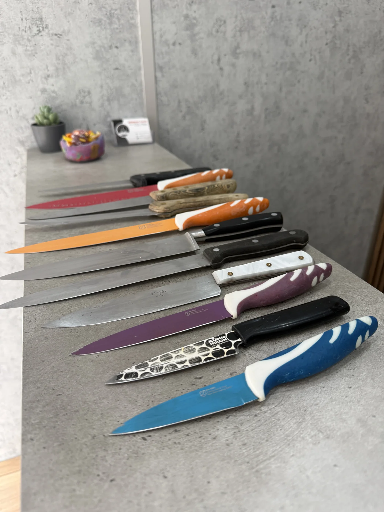
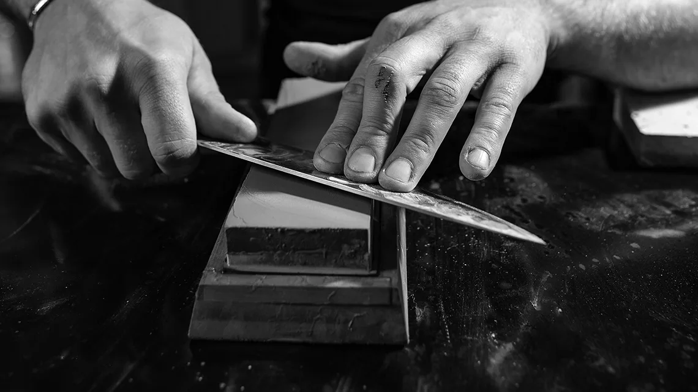

En casa. En cocina profesional.

Atención a cada herramientaAfilado profesional de cuchillos, tijeras y herramientas de manicura y pedicura. Para volver a trabajar a gusto.
Encuentra tu servicioLo que necesitas afilar
De la cocina al taller.
Elige por dónde empezar.
De tu mano a la mía
Consulta el horario antes de venir.
Si tienes dudas, envíame antes una foto por WhatsApp.
Cuéntame qué falla y cómo la utilizas. Puedes traer cuchillos, tijeras de distintos usos y herramientas de manicura o pedicura.
Reviso el estado de la pieza contigo. Aclaramos qué trabajo necesita, su precio y cuándo podrás recogerla.
Te explico el trabajo realizado y cómo cuidar el filo en el uso diario. Si notas algo distinto al utilizarla, cuéntamelo.
Escríbenos primero
Protege cada pieza
Avísanos del envío
Confirmamos y afilamos
De vuelta tras el pago
En la mesa de trabajo
Así abordo tu herramienta.
Elige una etapa para verla.

Me cuentas qué notas al usarla y para qué necesitas la herramienta.
Observo el filo, el desgaste y el ajuste sin pasar los dedos por el corte.
Trabajo la pieza según su estado y las necesidades de su uso.
Compruebo el corte con una prueba adecuada a la herramienta y te explico cómo cuidarla.
Aquí, en Valencia
Puedes consultar por teléfono o WhatsApp antes de venir. Si prefieres consultar antes, envíame una foto de tu herramienta por WhatsApp.
Valencia
Ver ubicación
en Google Maps